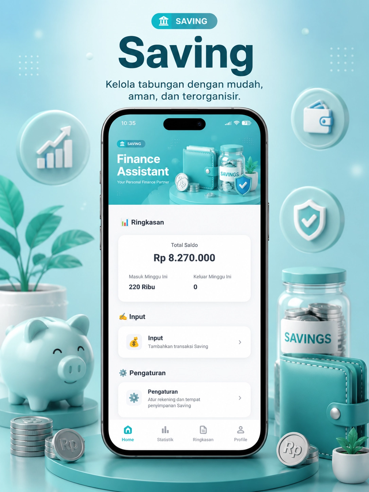

Saving
Catat tabungan dan transaksi dari berbagai bank, wallet, hingga tabungan pribadi.
Lihat Panduan →Tabungan tersebar di banyak tempat sampai tidak tahu totalnya sudah berapa.
- Catat tabungan dari berbagai bank, wallet, dan tabungan pribadi
- Pantau saldo dan riwayat transaksi tiap akun tabungan
- Lihat total tabungan terkumpul dalam satu ringkasan
Bacaan terkait
5 tips menabung rutin menyisihkan gaji →